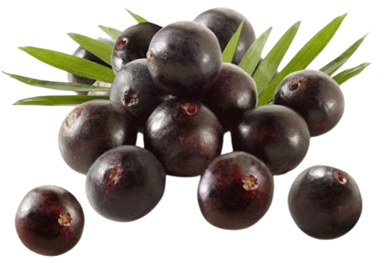
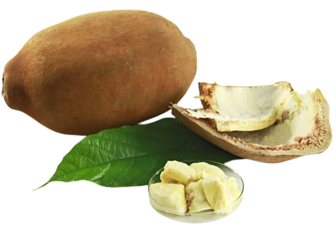

Nossos produtos, são de alta qualidade e oferecem diversos benefícios à saúde.

O açaí ajuda a combater o estresse oxidativo e a inflamação, seu teor de vitamina C e compostos bioativos, fortalecem o sistema imunológico e promovem a saúde da pele.
